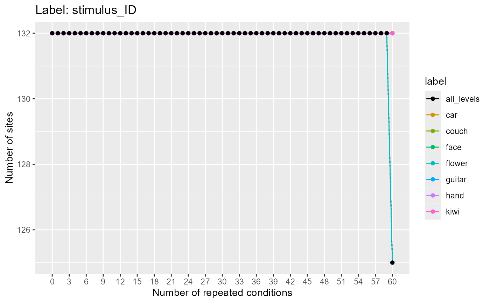

R/get_num_label_repetitions.R
get_num_label_repetitions.RdCalculates number of sites that have at least k label level repetitions for all values k. This information is useful for assessing how to set the number of cross-validation splits (and repeats of labels per cross-validation split) to use in a datasource. One can also assess the number of label level repetitions separately conditioned on another site_info variable. For example, if one has recordings from different brain regions, and the brain region information is contained in a site_info variable, then one could calculate how many sites have at least k repetitions for each stimulus in each brain region.
get_num_label_repetitions( binned_data, variable_to_use, site_info_grouping_name = NULL, levels_to_use = NULL )
| binned_data | A string that list a path to a file that has data in binned format, or a data frame of binned_data that is in binned format. |
|---|---|
| variable_to_use | A string specifying whether label variable should be used for calculating the minimum number of level repetitions. |
| site_info_grouping_name | A character string that specifies if the number of sites that have k repetitions should be computed separately based on the levels of a site_info variable. |
| levels_to_use | A character vector specifying which levels to include. If not set, all levels will be used. |
The returned value is an S3 object that inherits from data.frame that has an associated plot() method.
data_file <- system.file("extdata/ZD_150bins_50sampled.Rda", package = "NeuroDecodeR") label_rep_info <- get_num_label_repetitions(data_file, "stimulus_ID") plot(label_rep_info)